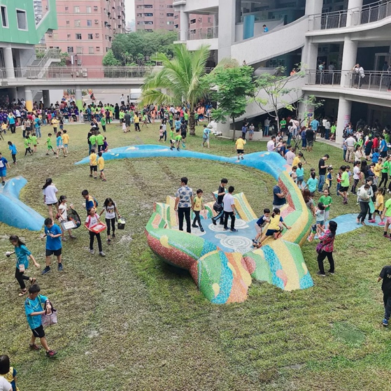
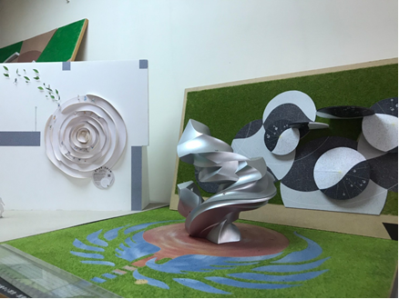

今年三十四歲的周承恩設計師，正值事業起飛的時刻。回想起大學剛畢業時，他和許多應屆畢業生有著一樣的困擾，尚未確定往後的職場方向，之後在因緣際會下，大學的教授邀請他進入事務所從事公共藝術行業，從此開啟公共藝術生涯。
今年三十四歲的周承恩設計師，正值事業起飛的時刻。回想起大學剛畢業時，他和許多應屆畢業生有著一樣的困擾，尚未確定往後的職場方向，之後在因緣際會下，大學的教授邀請他進入事務所從事公共藝術行業，從此開啟公共藝術生涯。

利用原本的建築特色做出瀑布及水流的造型，
再結合舞台的設計，讓原本平凡的空地有了新的用途。
身為從小生活在高雄的孩子，他卻選擇離開家鄉，駐足台中打拼事業，對於家鄉的思念不曾減少，因此他希望能夠將自己的創作在高雄展出，並且方便讓父母能夠前往欣賞自己的辛苦結晶。而這個願望周承恩成功地實現了，佇立於高雄河堤國小的《大河彼端》即是他為高雄帶來的美麗創作，利用水流瀑布的建築感作為設計，再將舞台以及水花結合到藝術品當中，讓這件公共藝術以及中庭廣場就好像一個開放式的歌劇院，讓師生們可以在此觀賞劇團表演，也為這塊土地帶來新生。
「為什麼要有公共藝術，除了美觀還有什麼意義呢？」
他說，利用每一次的藝術創造，將新的意義賦予在土地上，讓前來的人們能夠產生與以往不同的感受，也能為土地帶來新的機會，就以高雄河堤國小為例，再增添了公共藝術裝置後，學校開始有了更多表演活動，裝置藝術不只是賦予新生，更是利用設計來活化土地，為區域帶來文化。
他認為，文化並不是立即產生的，而是在藝術進到區域後，讓大家能夠與之互動、接觸，因而產生記憶的連結，經過時間的推移，這些裝置藝術便能進入大眾的內心，進而成為地方文化。
藝術使設計者痛苦，卻也充滿喜悅。熬夜製作、跑工地……等等，除了這些身體上的勞累，缺乏靈感的困境也讓人充滿疲憊感，工作了一整天，下班回家後依然無法將心抽離工作，不斷地轉動腦袋來激發新的想法，這讓他很是煎熬。但即使如此，在創作的同時卻也給他帶來很大的成就。總之，痛苦及快樂並行，連帶過程中的煎熬一併享受，使他能夠繼續堅持下去。
環境設計師所被賦予的使命，即是為地方賦予上新的意義，帶來新的生氣。對於想要踏入環境設計領域的社會新鮮人，周承恩設計師說，這個圈子並非有太大的科系限制，唯一所需要具備的是對於藝術的想法，並且從各個事物上發現它的意義，若是對於藝術沒有熱忱，走在公共藝術的道路上必定會更加艱辛。
